## Data
## # A tibble: 6 × 4
## treat patch quad algae
## <fct> <fct> <dbl> <dbl>
## 1 high 1 1 0
## 2 high 1 2 0
## 3 high 1 3 0
## 4 high 1 4 6
## 5 high 1 5 2
## 6 high 2 1 0
##
##
## Treatment levels:
## [1] "none" "low" "medium" "high"Lecture: Nested ANOVA
Hierarchical designs
ANOVA
Factorial vs. nested designs, the nested-ANOVA linear model and variance partitioning, a naive-vs-correct worked example (sea urchin grazing and algae cover), afex and mixed-model (lmer) approaches, diagnostics, post-hoc comparisons, and a by-hand F-ratio calculation.
Where We Left Off
Covered last time — two-factor ANOVA:
- Example, linear model, analysis of variance
- Null hypotheses
- Interactions and main effects
- Unequal sample size
- Assumptions
Note
✅ Key idea from last lecture
In a factorial design, every level of B appears under every level of A. Today: what happens when B is only ever nested inside one specific level of A?

Part 1 · Multifactor Designs
Two-Factor (2-Way) ANOVA, Recap
- We often consider more than 1 factor (independent categorical variables) to reduce unexplained variance and look at interactions
- 2-factor designs (2-way ANOVA) are very common in ecology
- Can have more factors (e.g., 3-way ANOVA) — interpretation gets tricky
- Most multifactor designs are: factorial, nested, or mixed
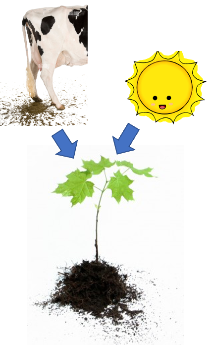
Factorial Versus Nested Designs
Consider two factors, A and B:
- Factorial/crossed: every level of B in every level of A
- Nested/hierarchical: levels of B occur only in 1 level of A
- both fixed — rare
- one fixed, one random
- both random — rare in ecology, common in genetics
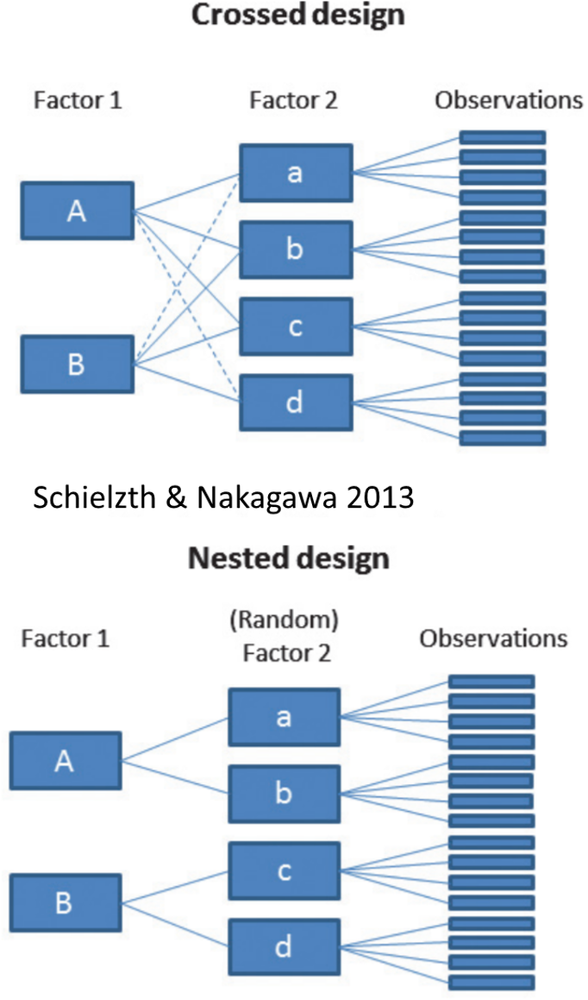
Part 2 · Factorial Designs — Examples
Factorial Designs Overview
Factorial designs: both factors are typically fixed (but not always).
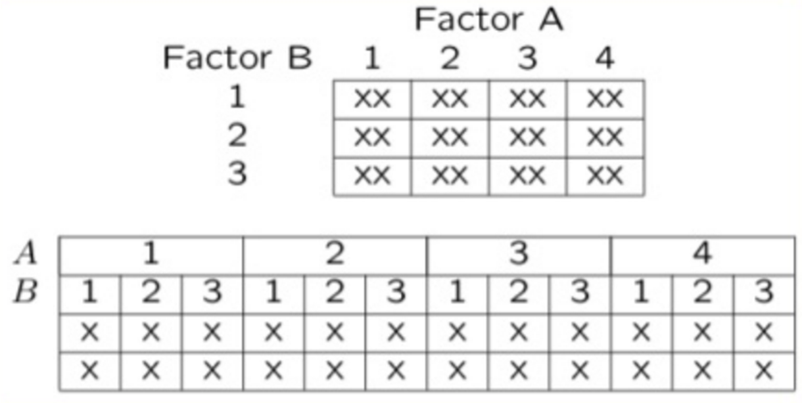
Factorial Design Example: Seedling Growth
Effects of light level on growth of seedlings of different size:
- 3 light levels (Factor A)
- 3 size classes (Factor B)
- 5 replicate seedlings in each cell

Factorial Design Example: Salamander Growth
Effects of food level and tadpole presence on larval salamander growth:
- 2 food levels (Factor A)
- Presence/absence of tadpoles (Factor B)
- 8 replicates in each cell

Factorial Design Example: Limpet Fecundity
Effect of season and density on limpet fecundity:
- 2 seasons (Factor A)
- 4 density treatments (Factor B)
- 3 replicates in each cell

Part 3 · Nested Designs — Examples
Nested Designs Overview
Nested designs cover: nested design examples, the linear model, analysis of variance, null hypotheses, unbalanced designs, assumptions, mixed-model ANOVA.
Nested designs: Factor A is usually fixed; Factor B is usually random.

Nested Design Example: Limpet Growth
Study on effects of enclosure size on limpet growth:
- 2 enclosure sizes (Factor A)
- 5 replicate enclosures (Factor B)
- 5 replicate limpets per enclosure

Nested Design Example: Reef Fish
Study on reef fish recruitment:
- 5 sites (Factor A)
- 6 transects at each site (Factor B)
- Replicate observations along each transect

Nested Design Example: Sea Urchin Grazing
Effects of sea urchin grazing on biomass of filamentous algae:
- 4 levels of urchin grazing: none, low, medium, high
- 4 patches of rocky bottom (3–4 m²) nested in each grazing level
- 5 replicate quadrats per patch
This is our worked example for the rest of the lecture.

Part 4 · The Nested Design Model
Nested Design: Linear Model Structure
Consider a nested design with:
- p levels of factor A (i = 1…p) — e.g., 4 grazing levels
- q levels of factor B (j = 1…q), nested within each level of A — e.g., 4 different patches per grazing level
- n replicates (k = 1…n) in each combination of A and B — e.g., 5 replicate quadrats in each patch in each grazing level

Calculating Means in a Nested Design
We can calculate several means:
- Overall mean (across all levels of A and B) = \(\bar{y}\)
- A mean for each level of A (across all levels of B in that A) = \(\bar{y}_i\)
- A mean for each level of B within each A = \(\bar{y}_{j(i)}\)

Nested Design Means, Visualized

The Nested Design Linear Model
\[y_{ijk} = \mu + \alpha_i + \beta_{j(i)} + \varepsilon_{ijk}\]
- \(y_{ijk}\) is the response variable — the value of the k-th replicate in the j-th level of B in the i-th level of A (e.g., algal biomass in the 3rd quadrat, in the 2nd patch, in the low-grazing treatment)
- \(\mu\) is the overall mean (overall average algal biomass)
Tip
🖐 Notice
This looks almost identical to the two-way ANOVA model — the difference is entirely in the subscript: \(\beta_{j(i)}\), not \(\beta_j\). B only exists inside a specific A.
Fixed and Random Effects in the Nested Model
\[y_{ijk} = \mu + \alpha_i + \beta_{j(i)} + \varepsilon_{ijk}\]
- \(\alpha_i\) is the fixed effect of factor A — the difference between the average biomass in all low-grazing-level quadrats and the overall mean
- \(\beta_{j(i)}\) is the random effect of factor B nested within factor A — usually a random variable measuring variance among all possible levels of B within each level of A (variance among all possible patches that could have been used in the low-grazing treatment)
Note
✅ Key idea
B being random is the whole point of nesting: you don’t care about these specific patches — you care about patch-to-patch variability in general.
The Error Term in the Nested Model
\[y_{ijk} = \mu + \alpha_i + \beta_{j(i)} + \varepsilon_{ijk}\]
- \(\varepsilon_{ijk}\) is the error term — the unexplained variance associated with the k-th replicate in the j-th level of B in the i-th level of A
- \(\alpha_i\) is the effect of the i-th level of A: \(\mu_i - \mu\)
- \(\varepsilon_{ijk}\): the difference between the observed algal biomass in the 3rd quadrat in the 2nd patch in the low-grazing treatment, and the predicted biomass (the average biomass in that 2nd patch in the low-grazing treatment)
Tip
🖐 Notice
The residual is measured against the cell mean (this specific patch), not the treatment mean — that’s what makes it “nested,” arithmetically.
Part 5 · Partitioning Variance
Analysis of Variance: Residual and Total
- \(SS_{resid}\) is the difference between each observation and the mean for its level of factor B, summed over all observations
- \(SS_{total} = SS_A + SS_B + SS_{resid}\)
- SS can be turned into MS by dividing by the appropriate df
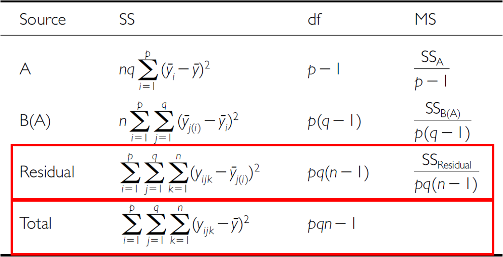
Analysis of Variance: SSA
As before, we partition the variance in the response variable using SS. \(SS_A\) is the SS of differences between the mean in each level of A and the overall mean.
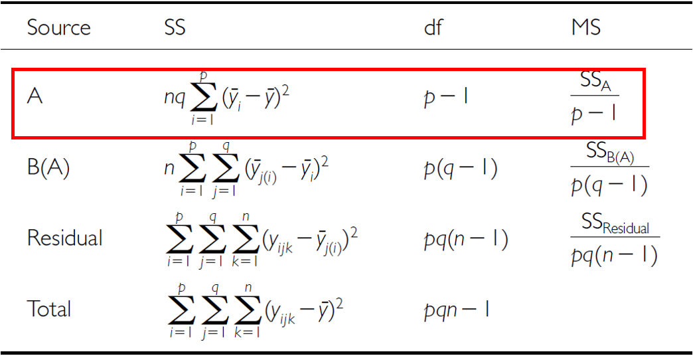
Analysis of Variance: SSB
\(SS_B\) is the SS of the difference between the mean in each level of B and the mean of the corresponding level of A, summed across all levels of A.
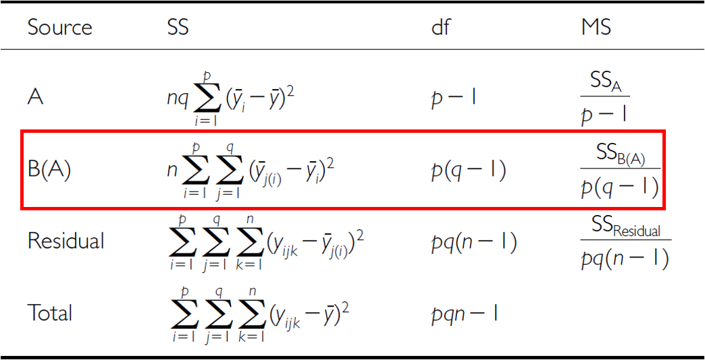
The Nested ANOVA Table
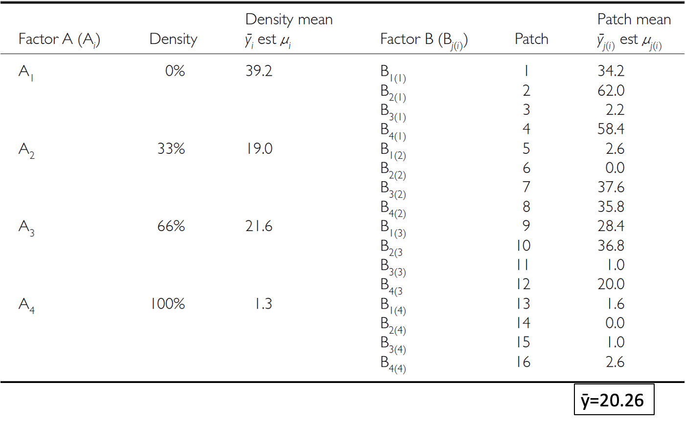
Part 6 · Hypotheses and Assumptions
Null Hypotheses: Factor A
Two hypotheses are tested on values of MS. 1. No effects of factor A — assuming A is fixed:
- \(H_0(A)\): \(\mu_1 = \mu_2 = ... = \mu_i = \mu\)
- Same as in 1-factor ANOVA, using means from B factors nested within each level of A
- (no difference in algal biomass across all grazing levels: \(\mu_{none} = \mu_{low} = \mu_{med} = \mu_{high}\))

Null Hypotheses: Factor B
2. No effects of factor B nested in A — assuming B is random:
- \(H_0(B)\): \(\sigma^2_\beta = 0\) (no variance added due to differences between all possible levels of B)
- (no variance added due to differences between patches)
Conclusions from the Analysis
Conclusion:
“Significant variation between replicate patches within each treatment, but no significant difference in the amount of filamentous algae between treatments.”

Unbalanced Nested Designs
Unequal sample sizes can arise from:
- An uneven number of B levels within each A
- An uneven number of replicates within each level of B
Not a problem unless you have unequal variance or a large deviation from normality.
Nested Design Assumptions
As usual, we assume: equal variance, normality, no outliers, independence of observations.
Equal variance + normality need to be assessed at both levels:
- Since means for each level of B within each A are used for the H-test about A, need to assess whether those means meet normality and equal variance
- Examine residuals for the H-test about B
- Transformations can be used
Warning
⚠️ Watch out!
This is the part people most often get wrong: checking assumptions on the raw data isn’t enough for a nested design — you need to check them at the level each hypothesis test actually operates on.
Part 7 · The Sea Urchin Example — Data
The Nested Design, the Hard Way
This analysis examines the effects of varying sea urchin densities on the percentage cover of filamentous algae. The experiment was designed with:
- Four random patches
- Four urchin density treatments (none = removed, low = control, medium = 33% of original density, high = 66% of original density)
- Five replicate quadrats measured within each treatment-patch combination
Note
📖 Reference
Quinn & Keough (2002), Experimental Design and Data Analysis for Biologists — this dataset and analysis follow their treatment of the sea urchin/algae example.
Data Overview
The data frame contains: patch (random patches 1–16 where treatments were applied), treat (urchin density treatment), quad (replicate quadrats within each treatment-patch combination), algae (percentage cover of filamentous algae — the response variable).
## Summary statistics by treatment:
## # A tibble: 4 × 7
## treat n mean sd se min max
## <fct> <int> <dbl> <dbl> <dbl> <dbl> <dbl>
## 1 none 20 39.2 28.7 6.41 0 83
## 2 low 20 21.6 25.1 5.62 0 79
## 3 medium 20 19 25.7 5.74 0 71
## 4 high 20 1.3 3.18 0.711 0 13A First Look at the Data
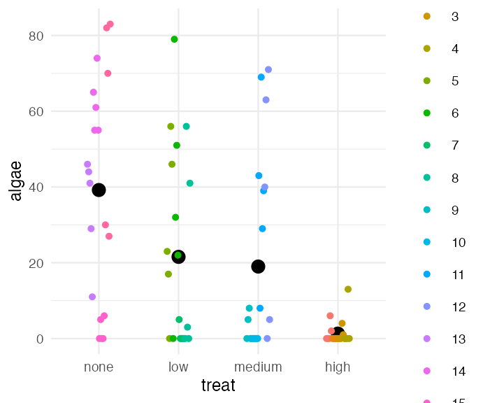
Part 8 · The Wrong Way — Naive Factorial Model
Manual Nested ANOVA — Setting Up
In this experimental design, patch is nested within treat because each patch received only one treatment level — a hierarchical design where the effect of patches must be considered within each treatment (Quinn & Keough 2002).
We’ll use a traditional nested ANOVA. You could make this easy by averaging algae per patch and running a one-way ANOVA — but your power is significantly reduced, and you lose estimates of variability among patches.
This first attempt is really a regular factorial ANOVA — not appropriate, since it’s pseudoreplicated. Also, the F-value for Treat is using \(MS_{resid}\) when it should use \(MS_{treat:patch}\).
u_fact_model <- aov(algae ~ treat + treat:patch, data = u_df)
cat("Factorial model summary:\n\n")
## Factorial model summary:
summary(u_fact_model)
## Df Sum Sq Mean Sq F value Pr(>F)
## treat 3 14429 4810 16.108 0.0000000658 ***
## treat:patch 12 21242 1770 5.928 0.0000008323 ***
## Residuals 64 19110 299
## ---
## Signif. codes: 0 '***' 0.001 '**' 0.01 '*' 0.05 '.' 0.1 ' ' 1Why the Factorial ANOVA Is Not Correct
- We can correct this by specifying the error term
- The MS needed for the F-value is really MS(patch nested in treatment), because those are the true replicates
- We can specify that — the problem is this approach can’t really handle unbalanced designs
u_nested_model <- aov(algae ~ treat + Error(treat:patch), data = u_df)
cat("Correctly specified nested ANOVA:\n\n")
## Correctly specified nested ANOVA:
summary(u_nested_model)
##
## Error: treat:patch
## Df Sum Sq Mean Sq F value Pr(>F)
## treat 3 14429 4810 2.717 0.0913 .
## Residuals 12 21242 1770
## ---
## Signif. codes: 0 '***' 0.001 '**' 0.01 '*' 0.05 '.' 0.1 ' ' 1
##
## Error: Within
## Df Sum Sq Mean Sq F value Pr(>F)
## Residuals 64 19110 298.6Part 9 · Modern Approaches — afex and Mixed Models
What to Do If It’s an Unbalanced Design
The afex package is specifically designed for ANOVA with Type III SS, and handles nested designs well — even when unbalanced.
options(contrasts = c("contr.sum", "contr.poly"))
u_afex_model <- aov_car(algae ~ treat + Error(patch),
data = u_df,
fun_aggregate = mean)
cat("AFEX nested ANOVA results:\n\n")
## AFEX nested ANOVA results:
summary(u_afex_model)
## Anova Table (Type 3 tests)
##
## Response: algae
## num Df den Df MSE F ges Pr(>F)
## treat 3 12 354.03 2.7171 0.40451 0.09126 .
## ---
## Signif. codes: 0 '***' 0.001 '**' 0.01 '*' 0.05 '.' 0.1 ' ' 1The Modern Way — Mixed-Model ANOVA
Fit the model with treatment as a fixed effect, and patch nested within treatment as a random effect: lmer(algae ~ treat + (1|treat:patch), ...).
BOBYQA (Bound Optimization BY Quadratic Approximation) is an optimization algorithm used in mixed-effects modeling to find the parameter values that maximize the likelihood function — useful for fitting complex nested models.
Notation we’ll get into later:
- Random intercept, fixed slope —
(1|patch) - Random intercept, random slope —
(1|treat:patch)
u_lmer_model <- lmer(algae ~ treat + (1|treat:patch), data = u_df,
control = lmerControl(optimizer = "bobyqa",
optCtrl = list(maxfun = 2e5)))
cat("Mixed model summary:\n\n")
## Mixed model summary:
summary(u_lmer_model)
## Linear mixed model fit by REML. t-tests use Satterthwaite's method [
## lmerModLmerTest]
## Formula: algae ~ treat + (1 | treat:patch)
## Data: u_df
## Control: lmerControl(optimizer = "bobyqa", optCtrl = list(maxfun = 200000))
##
## REML criterion at convergence: 684.9
##
## Scaled residuals:
## Min 1Q Median 3Q Max
## -1.9808 -0.3106 -0.1093 0.2831 2.5910
##
## Random effects:
## Groups Name Variance Std.Dev.
## treat:patch (Intercept) 294.3 17.16
## Residual 298.6 17.28
## Number of obs: 80, groups: treat:patch, 16
##
## Fixed effects:
## Estimate Std. Error df t value Pr(>|t|)
## (Intercept) 20.262 4.704 12.000 4.308 0.00102 **
## treat1 18.938 8.147 12.000 2.324 0.03846 *
## treat2 1.288 8.147 12.000 0.158 0.87707
## treat3 -1.263 8.147 12.000 -0.155 0.87943
## ---
## Signif. codes: 0 '***' 0.001 '**' 0.01 '*' 0.05 '.' 0.1 ' ' 1
##
## Correlation of Fixed Effects:
## (Intr) treat1 treat2
## treat1 0.000
## treat2 0.000 -0.333
## treat3 0.000 -0.333 -0.333Mixed-Model ANOVA — Method 1: F-Distribution
- Accounts for the uncertainty in variance-component estimation
- More conservative (higher p-values)
- Better for small samples
u_anova_result <- Anova(u_lmer_model, type = 3, ddf = "Satterthwaite",
test.statistic = "F")
cat("Type III ANOVA with F test:\n\n")
## Type III ANOVA with F test:
u_anova_result
## Analysis of Deviance Table (Type III Wald F tests with Kenward-Roger df)
##
## Response: algae
## F Df Df.res Pr(>F)
## (Intercept) 18.5551 1 12 0.001018 **
## treat 2.7171 3 12 0.091262 .
## ---
## Signif. codes: 0 '***' 0.001 '**' 0.01 '*' 0.05 '.' 0.1 ' ' 1Mixed-Model ANOVA — Method 2: Chi-Square
- Assumes variance components are known (not estimated)
- More liberal (lower p-values)
- Assumes large samples
Why different results? Chi-square = F × numerator df. The F-test accounts for the denominator df (12, here — reflecting sample size); Chi-square assumes infinite denominator df (i.e., a large sample).
Rule of thumb: under 100 observations or < 20 random-effect levels, use the F-test. Over 500 observations and > 50 random-effect levels, Chi-square is okay. In between, the F-test is safer.
u_anova_f <- Anova(u_lmer_model, type = 3, test.statistic = "Chisq")
cat("Type III ANOVA with Chi-square test:\n\n")
## Type III ANOVA with Chi-square test:
u_anova_f
## Analysis of Deviance Table (Type III Wald chisquare tests)
##
## Response: algae
## Chisq Df Pr(>Chisq)
## (Intercept) 18.5551 1 0.00001651 ***
## treat 8.1513 3 0.04299 *
## ---
## Signif. codes: 0 '***' 0.001 '**' 0.01 '*' 0.05 '.' 0.1 ' ' 1The Nested Model, Restated
\[algae_{ijk} = \mu + \alpha_i + \beta_{j(i)} + \epsilon_{ijk}\]
- \(\mu\) is the overall mean
- \(\alpha_i\) is the fixed effect of treatment i
- \(\beta_{j(i)}\) is the random effect of patch j nested within treatment i
- \(\epsilon_{ijk}\) is the residual error for quadrat k in patch j within treatment i
## Final ANOVA results:
## Analysis of Deviance Table (Type III Wald F tests with Kenward-Roger df)
##
## Response: algae
## F Df Df.res Pr(>F)
## (Intercept) 18.5551 1 12 0.001018 **
## treat 2.7171 3 12 0.091262 .
## ---
## Signif. codes: 0 '***' 0.001 '**' 0.01 '*' 0.05 '.' 0.1 ' ' 1Part 10 · Post-Hoc and Interpretation
Interpreting the Variance Components
Important
The nested ANOVA reveals that there was no significant effect of urchin density treatment on algae cover (χ² = 8.1513, df = 3, p = 0.04306). The variance component for patches nested within treatments (294.3) indicates substantial spatial heterogeneity in algae cover, highlighting the importance of accounting for this spatial variation in the analysis.
Post-Hoc Comparisons
Although the main effect of treatment was marginally significant (p = 0.04306), we can examine mean differences between treatments to understand patterns in the data.
u_emm <- emmeans(u_lmer_model, ~ treat)
cat("Estimated marginal means:\n\n")
## Estimated marginal means:
u_emm
## treat emmean SE df lower.CL upper.CL
## none 39.2 9.41 12 18.70 59.7
## low 21.6 9.41 12 1.05 42.0
## medium 19.0 9.41 12 -1.50 39.5
## high 1.3 9.41 12 -19.20 21.8
##
## Degrees-of-freedom method: kenward-roger
## Confidence level used: 0.95u_pairs <- pairs(u_emm, adjust = "sidak")
cat("Pairwise comparisons (Sidak adjusted):\n\n")
## Pairwise comparisons (Sidak adjusted):
u_pairs
## contrast estimate SE df t.ratio p.value
## none - low 17.65 13.3 12 1.327 0.7557
## none - medium 20.20 13.3 12 1.518 0.6356
## none - high 37.90 13.3 12 2.849 0.0848
## low - medium 2.55 13.3 12 0.192 1.0000
## low - high 20.25 13.3 12 1.522 0.6331
## medium - high 17.70 13.3 12 1.330 0.7534
##
## Degrees-of-freedom method: kenward-roger
## P value adjustment: sidak method for 6 testsCompact Letter Display
u_cld <- multcomp::cld(u_emm, alpha = 0.05, Letters = letters)
cat("Compact letter display:\n\n")
## Compact letter display:
u_cld
## treat emmean SE df lower.CL upper.CL .group
## high 1.3 9.41 12 -19.20 21.8 a
## medium 19.0 9.41 12 -1.50 39.5 a
## low 21.6 9.41 12 1.05 42.0 a
## none 39.2 9.41 12 18.70 59.7 a
##
## Degrees-of-freedom method: kenward-roger
## Confidence level used: 0.95
## P value adjustment: tukey method for comparing a family of 4 estimates
## significance level used: alpha = 0.05
## NOTE: If two or more means share the same grouping symbol,
## then we cannot show them to be different.
## But we also did not show them to be the same.
Important
Interpreting treatment comparisons
Mean algae cover shows a pattern with increasing urchin density: None/Removed (39.20%) > Medium/33% Density (19.00%) > High/66% Density (21.55%) > Low/Control (1.30%). This suggests an inverse relationship between urchin density and algae cover. The high variability among patches within treatments contributed to the marginal statistical significance for the treatment effect.
Part 11 · Assumptions and Visualization
ANOVA Assumptions Testing — Base R
For valid inference from ANOVA, several assumptions must be met. We test these below with a base R approach — note that it doesn’t work all that well for a mixed model.
Tip
🖐 Notice
plot(mixed_model) and friends were built for lm() objects — they mostly work for lmer(), but purpose-built tools like DHARMa (next module) do a better job.
Diagnostic Plots
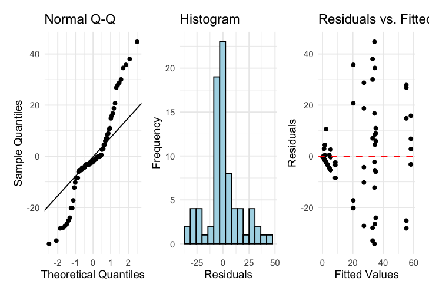
Levene’s Test for Homogeneity of Variance
u_levene <- leveneTest(algae ~ treat, data = u_df)
cat("Levene's test for homogeneity of variance:\n\n")
## Levene's test for homogeneity of variance:
u_levene
## Levene's Test for Homogeneity of Variance (center = median)
## Df F value Pr(>F)
## group 3 8.1694 0.00008785 ***
## 76
## ---
## Signif. codes: 0 '***' 0.001 '**' 0.01 '*' 0.05 '.' 0.1 ' ' 1
Important
Interpreting the assumption tests
The Q-Q plot shows some deviation from normality, particularly in the tails, and Levene’s test indicates significant heterogeneity of variances across treatments (p = 0.00008785). Quinn & Keough (2002) noted “large differences in within-cell variances” in this dataset, and transformations (including arcsin) did not improve variance homogeneity. However, ANOVA is generally robust to heteroscedasticity with balanced designs, which is why they analyzed untransformed data. The Residuals vs. fitted plot also shows a pattern of increasing variance with increasing fitted values, confirming the heteroscedasticity.
Visualization — Boxplot
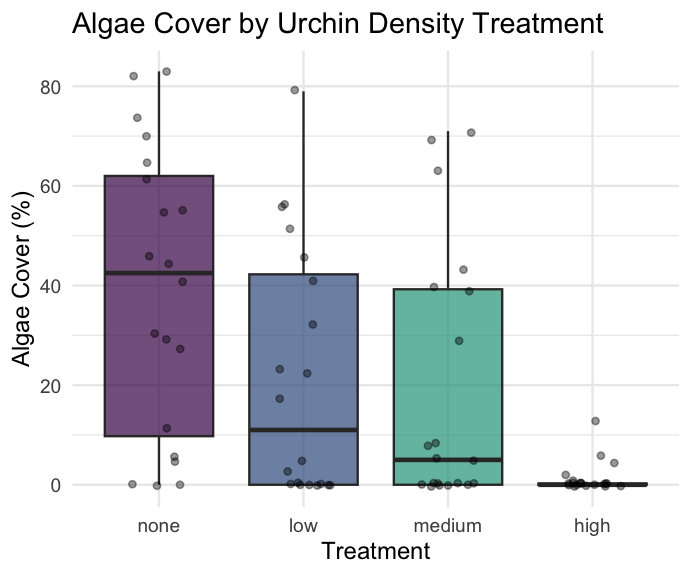
Visualization — Means Plot
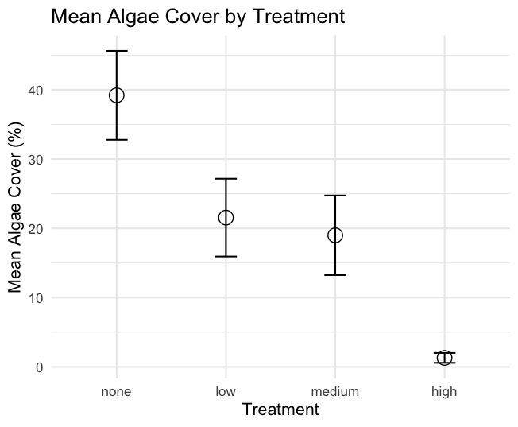
Part 12 · Discussion and Manual Calculation
Scientific Interpretation
Important
Our nested ANOVA analysis revealed substantial spatial heterogeneity in algae cover, with significant variation among patches within each treatment. The effect of urchin density treatments on filamentous algae cover was marginally significant at the α = 0.05 level (p = 0.043). Descriptive statistics show algae cover increasing as urchin density decreases, with None/Removed showing the highest cover (39.20%), followed by Medium/33% Density (19.00%), High/66% Density (21.55%), and Low/Control showing minimal algae cover (1.30%). The variance component for patches nested within treatments (294.31, ~39.5% of total variance) shows that spatial heterogeneity is a major structuring force in these algal communities, and needs to be accounted for when designing and analyzing ecological field experiments.
We Can Do This Manually — but Ugh
Nobody would ever do this by hand in practice — but seeing it once makes the “which MS goes on the bottom of the F-ratio” logic concrete.
u_man_model <- aov(algae ~ treat + treat:patch, data = u_df)
u_anova_summary <- summary(u_man_model)[[1]]
cat("Standard ANOVA table:\n\n")
## Standard ANOVA table:
u_anova_summary
## Df Sum Sq Mean Sq F value Pr(>F)
## treat 3 14429 4809.7 16.1075 0.00000006579 ***
## treat:patch 12 21242 1770.2 5.9282 0.00000083226 ***
## Residuals 64 19110 298.6
## ---
## Signif. codes: 0 '***' 0.001 '**' 0.01 '*' 0.05 '.' 0.1 ' ' 1u_MS_treat <- u_anova_summary[1, "Mean Sq"]
u_MS_patch <- u_anova_summary[2, "Mean Sq"]
u_MS_residual <- u_anova_summary[3, "Mean Sq"]
u_df_treat <- u_anova_summary[1, "Df"]
u_df_patch <- u_anova_summary[2, "Df"]
u_df_residual <- u_anova_summary[3, "Df"]
cat("MS Treatment:", u_MS_treat, "\n")
## MS Treatment: 4809.712
cat("MS Patch(Treatment):", u_MS_patch, "\n")
## MS Patch(Treatment): 1770.163
cat("MS Residual:", u_MS_residual, "\n\n")
## MS Residual: 298.6u_F_treat_correct <- u_MS_treat / u_MS_patch # Treatment tested against patches
u_F_patch <- u_MS_patch / u_MS_residual # Patches tested against residual
cat("F Treatment:", u_F_treat_correct, "\n")
## F Treatment: 2.717102
cat("F Patch(Treatment):", u_F_patch, "\n\n")
## F Patch(Treatment): 5.928207u_p_treat_correct <- pf(u_F_treat_correct, u_df_treat, u_df_patch, lower.tail = FALSE)
u_p_patch <- pf(u_F_patch, u_df_patch, u_df_residual, lower.tail = FALSE)
u_corrected_table <- data.frame(
Source = c("Treatment", "Patches(Treatment)", "Residual"),
Df = c(u_df_treat, u_df_patch, u_df_residual),
MS = round(c(u_MS_treat, u_MS_patch, u_MS_residual), 1),
F = c(round(u_F_treat_correct, 2), round(u_F_patch, 2), NA),
p = c(ifelse(u_p_treat_correct < 0.001, "<0.001", round(u_p_treat_correct, 3)),
ifelse(u_p_patch < 0.001, "<0.001", round(u_p_patch, 3)),
NA)
)
cat("Corrected ANOVA table:\n\n")
## Corrected ANOVA table:
u_corrected_table
## Source Df MS F p
## 1 Treatment 3 4809.7 2.72 0.091
## 2 Patches(Treatment) 12 1770.2 5.93 <0.001
## 3 Residual 64 298.6 NA <NA>